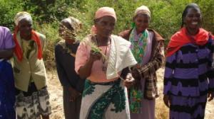
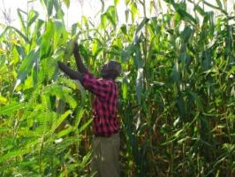
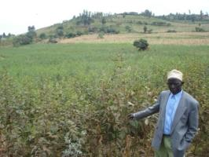
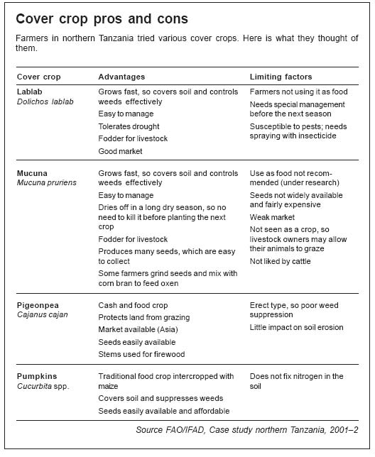

{kind=link}
Challenges for conservation agriculture
Conservation agriculture has the potential to change the face of Africa. But its success is not automatic. It faces various challenges.
Change of mindset
Switching to conservation agriculture involves a fundamental change of mindset. For example, farmers must drop their traditional practice of preparing the land with a hoe or plough, and instead rely on "biological tillage" by the plant roots and earthworms. The switch also encourages farmers to begin to see their farms as a business rather than merely a way to feed their families.
Conservation agriculture involves radical changes in what extension services do. An effective way to promote conservation agriculture is through farmer field schools and other approaches that put farmers and their needs at the centre, rather than seeing them as mere recipients of advice. Such revolutionary changes require teaching, not only on the farm itself but also within schools and colleges. Extension staff will need intensive training so they can learn the necessary technologies. Field demonstrations and awareness-creation campaigns will also be needed. The mass media must be harnessed to support the campaign.
Crop residues
Keeping the soil covered is important in conservation agriculture. But it can be difficult. Farmers have many uses for crop residues: as fodder, fencing, roofing and fuel. Livestock keepers let their animals graze on stubble. In drier areas, it is impossible to grow a cover crop in the dry season, and crop residues are a vital source of animal feed.
If they are to keep the soil covered, farmers will have to protect their fields and find alternative sources of fuel and fodder. In wetter, sparsely populated areas, this is easy. In drier areas, it is more difficult. Alternatives include fencing animals out, reaching agreements with livestock owners on grazing rights, and growing special plots of fodder and fuelwood.
Land tenure
Farmers can go a long way towards adopting the principles of conservation agriculture with a minimum of investment on their farms. But they may be reluctant to do so if they do not have clear rights to the land they cultivate.
The importance, however, of the land tenure issue varies widely throughout Africa. In some countries, lack of guaranteed tenure impedes all agricultural development.
Adaptation of the "Brazilian" CA to take advantage of indigenous knowledge and different agro-ecological conditions is a process - uncomfortably long.
Other challenges
It can be hard to find seed (particularly of cover crops), inputs such as herbicides, and equipment. Crops such as tef, which has very small seeds, can be difficult to sow without disturbing the soil. And for various reasons, it can be difficult for farmers to work in groups, form organizations or get the support they need to begin practising conservation agriculture.
The importance of cover crops in conservation agriculture
Cover crops make up a fundamental component of the stability of the conservation agriculture system, as much for its direct and indirect effects on soil properties as for its capacity to promote an increased biodiversity in the agro-ecosystem.
While commercial crops have a market value, cover crops are mainly grown for their effect on soil fertility or as livestock fodder. In regions where smaller amounts of biomass are produced, like semi arid (dry) areas and eroded soils, cover crops are beneficial as they:
- protect the soil during fallow periods
- mobilise and recycle nutrients
- improve the soil structure and break compacted layers and hard pans
- permit a rotation in a monoculture
- can be used to control weeds, pests or break soil compaction
 Cowpea being grown as a cover crop in a conservation agricultural project in Swaziland. This vigorous biomass production is ideal for this farming method forming mulch to improve soil fertility and restrict weed growth. (c) Roger P. Ellis, Courtesy of Ecoport (www.ecoport.org)
|
Cover crops are suitable for:
- protecting the soil, when it is not cultivated
- providing an additional source of organic matter to improve soil structure and create an
- improved topsoil
- recycling nutrients and mobilizing them in the soil profile in order to eliminate layers with slow
- moving nutrients like phosphorus and potassium
- "biological ploughing" of the soil; the roots of some crops, especially cruciferous crops, like oil
- radish are pivotal and able to penetrate compacted or very dense layers , increasing water
- percolation capacity of the soil
- utilising easily leached nutrients
Crop residues left on the soil surface lead to higher soil aggregation, and higher porosity and higher number of macro pores, and thus to a higher trend in infiltration rates. As different cover crops produce different amount of biomass, the density of the residues varies with different crops and thus the ability to increase water infiltration.
|  |
| Farmers in Mbeere appreciating the effect of biological subsoiling by cover crop |
| (c) T. Apina, ACT Kenya
|
|  |
| Increased yield when CA is integrated with agro forestry |
| (c) T. Apina, ACT Kenya
|
|  |
| CA adopter farmer using cover crop instead of leaving their plots fallow |
| (c) T.Apina, ACT, Kenya
|
Cover crops versus green manure
- in conservation agriculture systems the soil is not disturbed, or as is disturbed as little as possible and more important,
- when biomass is incorporated in the soil a high microbial activity starts in order to decompose the material, resulting in a sudden release of a high quantity of nutrients that can not be captured by the seedlings of the following crop and thus disappear from the system.
Commonly used cover crop species
There are various crop alternatives to be used as vegetative cover, like grains, legumes and oil crops. All of them are of great benefit to the soil; however, some crops emphasize certain benefits, which is useful to keep in mind when planning a rotation scheme. It is important to start the first years of conservation agriculture with (cover) crops that leave a lot of residues on the soil surface, which decompose slowly (because of the high C/N ratio). Grasses and cereals are most appropriate for this stage, also because of their rooting system, which need a shorter time to improve the soil. In the following years, when the soil shows a healthier appearance, legumes can be incorporated in the rotation.
Resistance to decomposition
Case 1: Effects of various live cover crop types on soil loss - Gatanga Kenya
| no cover crop | Mucuna | Purple vetch | Dolichos | |
| % ground cover | 0 | 43.2 | 9 | 11.4 |
| cumulative soil loss tonne/hectare | 3.3 | 0.35 | 1.83 | 1.32 |
Effects of cover crop on water economy:
Water balance
- Rainfall that enters in soil vs water that is lost through transpiration and evaporation
Effect of cover
- Promotes infiltration
- Decrease evaporation from the soil surface
- 3-7% more soil moisture found under soil cover - yield effects of drought
Effects of cover crop on soil temperature
- Root extension, soil moisture, soil life nutrient uptake etc.
- Upper extreme limit - 30-35 degree Celsius ; lower limit 15-20 degree Celsius.
- Maize - every 1 degree Celsius increase in soil temperature above 30 degree Celsius cause 10% reduction in yields.
- Soil cover - reflect sunlight, absorb some radiation (insulate soil). Hence soil under cover receives less heat.
- Less heat - less evaporation - increased moisture - cooler soil.
Effects of cover crop on soil chemical properties
- Improves soil carbon
- Protects and increases soil humus - lignin, wax and fat-like substances form stable humus after decomposition
- Improves soils cation exchange capacity - the capacity of the soil to store nutrients
- C/N ratio with N immobilization - temporary shortage of N
- Adds nutrients to the soil
How to choose the right cover crop
- Choose cover crops that fit into your normal cropping system and which has multiple purposes: edible seeds and vegetables, soil fertility, animal fodder, firewood/fencing material, weed suppression, medicines
- Select a cover crop that grows well in your area (adapted to soil type, rainfall, temperature and altitude. If you live in an area with little rainfall, select a cover crop that grows quickly, such as desmodium, lablab, lucerne, mucuna or pigeon pea
- Select crops that cover the soil quickly and give less work for land preparation, weeding, producing and harvesting the seeds. Species with big pods and grains like pigeon pea and mucuna are easier to deal with than species with small pods such as vetch and grasses.
- The cover crop should not interfere with the main crop. Avoid growing a tall cover crop that might shade the main crop. Prevent this by planting the cover crop later
- If you can not prevent livestock from getting into your fields, choose a cover crop they do not like to eat, such as sunn hemp (Crotalaria) or jack bean (Canavalia)
- To ensure a lasting soil cover, use a mixture of legumes and grasses. Legumes decompose quicker than grasses. This means that the next crop can use nutrients such as nitrogen from the legumes quickly
An ideal cover crop should:
- Grow quickly and produce ground cover rapidly
- Be aggressive and be able to compete with weeds
- Prevent soil erosion
- Have a considerable leaf production and litter fall
- Seed freely and produce edible seed and/ or be suitable for use as animal feed
- Does not require inoculation with introduced rhizobia
- Leave residual N for the following cash or subsistence crops
Cover crop and residue management
- bad placement of the seeds at sowing, resulting in an uneven germination
- a cold and humid surroundings of the seeds favours the development of pests and diseases
- bringing- about allelopathy
Inter-cropping/mix cropping
Commonly used mixtures include:
Mixed cropping is another form of crop mixtures. For instance, maize can be mixed with pigeon pea and Crotalaria juncea both planted when the maize plants have reached a height of 30cm by using the same machine as for planting maize.
When to plant cover crops?
Intercropping
Relay cropping
Sequential planting
How to plant cover crops?
In conservation agriculture, cover crops are planted directly with minimum soil disturbance. You can plant a cover crop as an intercrop (or relay crop) or in a pure stand. For cover crops with large seeds, plant with a hand hoe, jab planters or animal drawn direct planter (for pure stands). You can broadcast cover crops with small seeds (such as finger millet), provided the soil cover is not too thick. If the soil cover is thick, sow the seeds in lines by hand or use a seed drill. The plant spacing and number of seeds per hole depend on several factors.
- Use a narrower spacing in pure stands, and a wider spacing in mixed (intercropped) stands
- Use a wider spacing in drier areas, so the plants don't compete with each other for moisture.
- The number of seeds per hole depends on the amount of moisture available: fewer seeds per hole in dry areas; more in wetter areas. In general, plant 2 - 4 seeds per hole.
How can farmers obtain cover crop seeds?
| No | Common name | Scientific name | Where to get it |
| 1 | Groundnut | Arachis hypogaea L. | Agricultural research centres/Seed companies |
| 2 | Wid peanut | Arachis pintoi Krap. & Greg | Agricultural research centres/Seed companies |
| 3 | Pigeon pea | Cajanus cajan (L) Millsp. | Agricultural research centres/Seed companies |
| 4 | Calopo | Calopogonium mucunoides Desv. | Agricultural research centres/Seed companies |
| 5 | Jackbean | Canavalia ensiformis (L.) DC. | Agricultural research centres/Seed companies |
| 6 | Chick pea | Cicer arietinum L. | Agricultural research centres/Seed companies |
| 7 | Clitoria | Litoria ternatea L. | Agricultural research centres/Seed companies |
| 8 | Sunnhemp | Crotalaria juncea L. | Agricultural research centres/Seed companies |
| 9 | Tanzanian sunnhemp | Crotalaria ochroleuca | Agricultural research centres/Seed companies |
| 10 | Greenleaf desmodeum | Desmodeum intortum | Agricultural research centres/Seed companies |
| 11 | Silverleaf esmodeum | Desmodeum uncinatum | Agricultural research centres/Seed companies |
| 12 | Buckwheat | Fagopyrum esculentum | Agricultural research centres/Seed companies |
| 13 | Soybean | Glycine max. | Agricultural research centres/Seed companies |
| 14 | Hyacinth bean | Lablab purpureus | Agricultural research centres/Seed companies |
| 15 | Trefoil | Lotus corniculatus | Agricultural research centres/Seed companies |
| 16 | Sweet white lupine | Lupinus albus | Agricultural research centres/Seed companies |
| 17 | Blue lupine | Lupinus angustifolius | Agricultural research centres/Seed companies |
| 18 | Yellow lupine | Lupinus leteus | Agricultural research centres/Seed companies |
| 19 | Siratro | Macroptilium atropurpureum | Agricultural research centres/Seed companies |
| 20 | Archer Axillaris | Macrotyloma axiilare | Agricultural research centres/Seed companies |
| 21 | Horsegram | Macrotyloma uniflorum | Agricultural research centres/Seed companies |
| 22 | Lucerne, alfalfa | Medicago sativa | Agricultural research centres/Seed companies |
| 23 | Barrel medic | Medicago truncatula | Agricultural research centres/Seed companies |
| 24 | White sweet clover | Melilotus alba Medik. | Agricultural research centres/Seed companies |
| 25 | Velvet bean | Mucuna pruriens | Agricultural research centres/Seed companies |
| 26 | Glysine | Neontonia wightii | Agricultural research centres/Seed companies |
| 27 | Scarlet runner bean | Phaseolus coccineus | Agricultural research centres/Seed companies |
| 28 | Lima bean | Phaseolus lunatus | Agricultural research centres/Seed companies |
| 29 | Common bean | Phaseolus vulgaris | Agricultural research centres/Seed companies |
| 30 | Pea, field pea | Pisum sativum | Agricultural research centres/Seed companies |
| 31 | Tropical kudzu | Pueraria phaseoloides | Agricultural research centres/Seed companies |
| 32 | Stylo | Stylosanhtes guianensis | Agricultural research centres/Seed companies |
| 33 | Berseem clover | Trifolium alexandrinum | Agricultural research centres/Seed companies |
| 34 | Rose clover | Trifolium hirtum | Agricultural research centres/Seed companies |
| 35 | Crimson clover | Trifolium incarnatum | Agricultural research centres/Seed companies |
| 36 | Subclover | Trifolium subterraneum | Agricultural research centres/Seed companies |
| 37 | Arrowleaf clover | Trifolium vesiculosum | Agricultural research centres/Seed companies |
| 38 | Purple vetch | Vicia benghalensis | Agricultural research centres/Seed companies |
| 39 | Lana vetch | Vicia dasycarpa | Agricultural research centres/Seed companies |
| 40 | Faba bean | Vicia faba | Agricultural research centres/Seed companies |
| 41 | Common bean | Vicia sativa | Agricultural research centres/Seed companies |
| 42 | Hairy vetch | Vicia villosa | Agricultural research centres/Seed companies |
| 43 | Green gram | Vigna radiata | Agricultural research centres/Seed companies |
| 44 | Cowpea | Vigna unguiculata | Agricultural research centres/Seed companies |
| 45 | Bambara nut | Voandzeia subterranean | Agricultural research centres/Seed companies |
Do cover crops need weeding?
Controlling pests and diseases
- Rotate the types of crops grown: food, cover and cash crops.
- Select cover crops that are unlikely to be attacked by pests.
- Plant various different types of cover crops.
Harvesting and seed storage
Store cover crop seeds well. Here are a few tips on how to handle them:
- Collect seeds from several plants so you get a range of seeds.
- Dry the seeds and treat them with insecticide. If you want to use the seeds for food, make sure that the insecticide is not harmful.
- Keep seeds for planting in partly opened bags or in containers in a well ventilated store.
- Take the seeds out and dry them again regularly. Throw out any bad seeds.
Preparing to plant the main crop
Case 2:
|  |
| Cover crop pros and cons |
| (c) FAO/IFAD
|
Mulching
Crop residues
The following are some of the most common mulch mainly from crop residues:
- Rice husks
- Millet stems
- Sorghum stems
- Maize stover
- Wheat stover
- Rice straw
- Ground nut leaves
- Ground nut stems
- Cowpea leaves
- Cowpea stems
- Saw dust, etc
Case 3: Effect of mulch on average nutrient content of some crop residues (% of dry weight)
| Crop part | N | P | K | Ca |
| Millet stems | 0.65 | 0.09 | 1.82 | 0.35 |
| Sorghum stems | 0.58 | 0.10 | 1.51 | 0.21 |
| Maize stover | 0.70 | 0.14 | 1.43 | 0.36 |
| Wheat stover | 0.62 | 0.12 | 1.72 | 0.27 |
| Rice straw | 0.58 | 0.13 | 1.33 | 0.20 |
| Ground nut leaves | 2.56 | 0.17 | 2.11 | 1.98 |
| Ground nut stems | 1.17 | 0.14 | 2.20 | 0.92 |
| Cowpea leaves | 1.99 | 0.19 | 2.20 | 3.16 |
| Cowpea stems | 1.07 | 0.14 | 2.54 | 0.69 |
Advantages and disadvantages of mulching
What are the advantages of mulching:
- Mulch keeps the soil underneath moist longer than bare soil.
- Controls soil erosion by cushioning the impact of raindrops and by slowing runoff.
- Suppresses weeds by shading them out.
- Leads to healthy crop growth.
What are the disadvantages:
- Mulching is labour-intensive.
- It can introduce new pests and diseases into a field.
- Dead plants for use as mulch may not be available.
How to do it:
1. Carry to the field the material you want to spread as mulch.
2. Spread it on the soil using your hands or a rake. Put a layer of mulch 7-15 cm (3-6 inches) deep all over the bed, or around the growing plants. Do not put on so much mulch that you bury the plants or shade them out.
Do's and Dont's:
- Use dry plant material that does not rot quickly.
- Don't use wet or green material as mulch.
Constraints of Mulching
Some organisms can proliferate too much in the moist and protected conditions of the mulch layer. Slugs and snails can multiply very quickly under a mulch layer. Ants or termites which may cause damage to the crops also may find ideal conditions for living. When crop residues are used for mulching, in some cases there is an increased risk of sustaining pests and diseases.
Damaging organisms such as stem borers may survive in the stalks of crops like cotton, corn or sugar cane. Plant material infected with viral or fungal diseases should not be used if there is a risk that the disease might spread to the next crop. Crop rotation is very important to overcome these.
When carbon rich materials such as straw or stalks are used for mulching, nitrogen from the soil may be used by micro organisms for decomposing the material. Thus, nitrogen may be temporarily not available for plant growth (risk of N-immobilization).
Risk of Nitrogen-immobilization:
When organic material is applied to the soil, the decomposing microbes multiply quickly. For growth, they need nutrients, especially nitrogen, like plants do. If the applied plant material does not contain sufficient nitrogen, the micro organisms will take it from the soil. This process is called nitrogen immobilization, as the nitrogen is fixed temporarily in the microbes and released only after some time. During this time, the microbes compete with the plants for nitrogen and the crop may suffer from malnutrition.
How to prevent N-immobilization:
- Old or rough plant materials should be applied to the soil at least two months before planting or sowing the main crop
- nitrogen immobilization can occur when the following materials are applied: straw or grain husks, material containing wood (e.g. twigs, saw dust), half rotten compost
Case 4: Handle with care! Cover crops can smotherMr. Anthony Owino Malowa of the Mariwa Farmer Field School and who is practicing conservation agriculture is HIV positive. Although he is weak, he practices conservation agriculture because it requires less labour. He no longer ploughs his field but uses the jab planter to plant directly. Since he adopted conservation agriculture, the weeds in his half-acre field were greatly reduced by intercropping maize with Dolichos lablab. However, in the 2005 long rains his farm, where he intercropped lablab with maize, never gave him any yield because lablab smothered all the maize. He discarded lablab as a cover crop even though it suppresses weeds, calling it a very dangerous weed. Mama Benta Odipo of the Tumaini Farmer Field School decided to plant beans as her main crop during the 2005 short rains. But after two weeks she decided to plant mucuna in between the rows, believing that after a short while, she would harvest her beans and have her soil covered with mucuna. It was a mistake. She never harvested any beans and there was no sign they had even been planted. This made her rethink using cover crops and she is contemplating leaving it out of her farming.
|
Information Source Links
- Baudeon, F.; Mwanza, H M.; Triomphe, B; Bwalya, M. (2007).Conservation agriculture in Zambia: a case study of Southern Province. Nairobi. African Conservation Tillage Network, Centre de Cooperation Internationale de Recherche Agronomique pour le Developpement, Food and Agriculture Organization of the United Nations. ISBN: 9966-7219-3-2
- Eyhorn, F., Heeb, M., Weidmann, G. (2002). IFOAM Training Manual for Organic Agriculture in the Tropics, Compiled by FiBL.
- Gachege, C.K.K., Wamuongo, J.W., Mureithi, J. G. and Eilitta, M. (2006). Development and Up-scaling of Green Manure Legume Technology in Kenya. KARI; Legume Research Network Project.
- IIRR and ACT (2005). Conservation agriculture: A manual for farmers and extension workers in Africa. International Institute of Rural Reconstruction , Nairobi; African Conservation Tillage Network, Harare. ISBN 9966-9705-9-2.
- International Institute of Rural Reconstruction (IIRR) and African Conservation Tillage Network (ACT) (2005). Conservation agriculture: a manual for farmers and extension workers in Africa. International Institute of Rural Reconstruction, Nairobi; African Conservation Tillage Network, Harare. ISBN 9966-9705-9-2
- International Institute of Rural Reconstruction: http://www.iirr.org/book.htm Accessed on 9.8.2007
- Kaumbutho, P. and Kienzle, P. (eds) (2007). Conservartion agriculture as practised in Kenya: two case studies. African Conservation Tillage Network, Centre de Cooperation Interrnationale de Recherche Agronomique pour le Developpement, Food and Agriculture Organisation of the United Nations. ISBN 9966-7219-0-8
- Nyende, P.; Nyakuni, A.; Opio, J. P.; Odogola, Wilfred. (2007). Conservation agriculture: a Uganda case study. Nairobi. African Conservation Tillage Network, Centre de Cooperation Interrnationale de Recherche Agronomique pour le Developpement, Food and Agriculture Organisation of the United Nations. ISBN 9966-7219-2-4
- Shetto, R.; Owenya, M., (eds). (2007). Conservation agriculture as practised in Tanzania:three case studies. Nairobi. African Conservation Tillage Network, Centre de Cooperation Internationale de Recherche Agronomique pour le Developpement, Food and Agriculture Organization of the United Nations. ISBN: 9966-7219-4-0